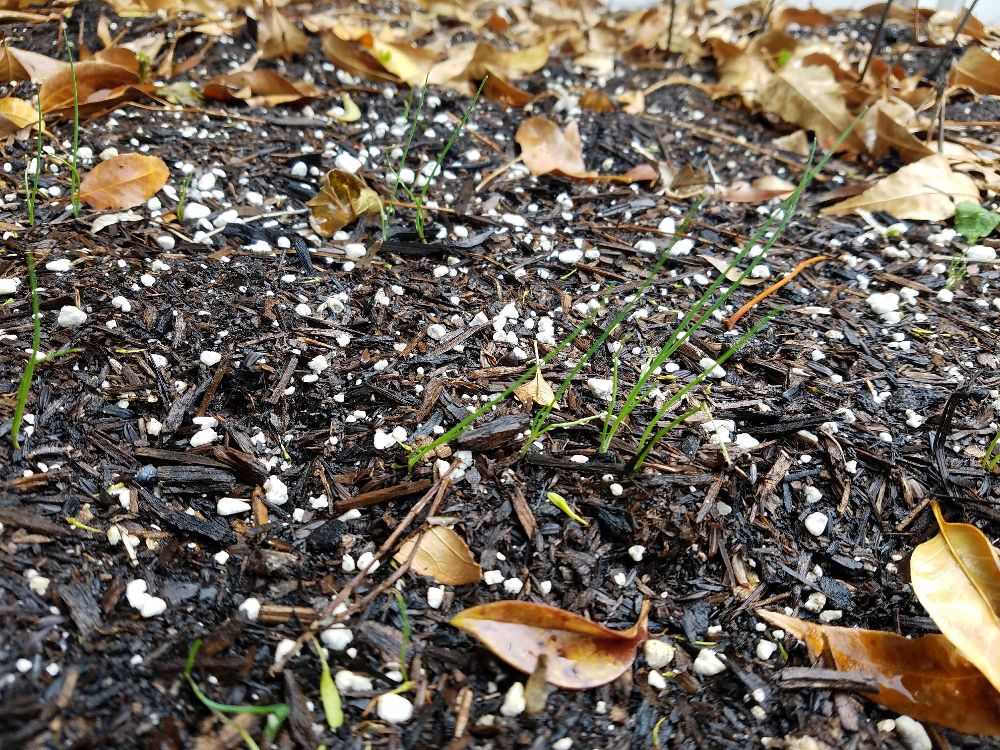

On Sunday, April 12th, I planted some pole beans!
Pole bean are beans that grow as long vines and require a pole or some other type of support to stay off the ground.
You want to keep the beans off the ground because they might rot if the beans or the leaves come in contact with the moist soil.
This is what I planted:
Stringless Blue Lake FM1K (pole)
Kentucky Wonder, Rust Resistant (pole)
I'm not sure what FM1K means. If you have a guess, let me know!
I also planted pumpkin seeds!
On the back of the seed envelopes, it said "Days to Germinate: 6-8", and, sure enough, in 7 days the beans sprouted, and the pumpkins sprouted later that day.
Here is what the tiny, baby, just sprouted beans looked like:
April 19th

And, here's how the chives are doing! They are 5 weeks from planting in this photo:
